MATTERIX + AUTO-ENGINEERING / SIMULATION FIRST
Complete the reference.
Keep the evidence visible.
从原文逐项复现：场景、物理交互、化学过程、感知、校准与学习。局部实验通过不等于整篇论文复现完成。
Within a 36-item audit. Configuration, quantitative results and real deployment keep separate acceptance.
Numerical tests, physical trials and semantic models keep separate boundaries.
Original code, independent reimplementations and missing inputs are distinguished.
LIVE EXECUTION
What is running
Experiment timestamps and publication timestamps are separate. The publisher runs every 10 minutes; an export older than 25 minutes is marked stale.
New: three-object continuous trial · 208.5 s
The positive and no-aspiration control each complete 125,100 steps. Their recorded rigid trajectories match exactly; six-well semantic delivery is 400 µL per well versus zero. Complete paired data, figures and pilot key frames are available. Inspect the trial and download its data ↗
New: full laboratory native screenshots
Four actual RTX captures are now available, with hood and glovebox visibility failures preserved. Inspect the scene and visual audit ↗
NEW EXPERIMENTS
Results with their limits
Preserved robot trial · 2026-10-13
UR5e + live DFSPH completed 12.5 s of pickup and pour: 155 / 240 particles reached the receiver. The whole trial failed its stability gate (maximum CFL 1.705, limit 0.4). The raw failure is retained; isolated fixture passes do not supersede this result. BC/DAgger and full robot acceptance remain open.
OT2 replay scale corrected · original failures preserved
The four OT2 clips below preserve all 15 body transforms/scales and 14 nonempty geometry bounds across 2,610 frames. The shell and nonuniform middle-bar scales now match the original asset. This validates recorded geometry mapping; reconstructed fixtures and semantic liquid are still disclosed. The four previous, incorrectly scaled clips remain listed in the failure archive.
The Panda physically loads the full-size plate, then the OT2 attaches tips, aspirates and dispenses into six wells, and disposes all eight tips. Each well finishes at 400 model µL; no plate reset occurs at the 44.5 s handoff. Each clip has 1,593 newly rendered recorded-state frames, exact native timestamps and independently checked geometry. Blue liquid is a semantic volume display. Tip rack and reservoir are prepositioned; local support, grip overlay and door hold remain adaptations. The pipette partly occludes one top-view well. Inspect exact terminal image

The same continuous physical sequence runs with aspiration disabled. All six wells finish empty and the source retains 20,000 model µL. Identical recorded rigid states establish an implementation-level semantic control; liquid mass does not feed back into the rigid dynamics. Each clip has 1,593 newly rendered recorded-state frames, exact native timestamps and independently checked geometry. Blue liquid is a semantic volume display. Tip rack and reservoir are prepositioned; local support, grip overlay and door hold remain adaptations. The pipette partly occludes one top-view well. Inspect exact terminal image

The complete 33.5 s trial ends with 218/240 particles in the receiver and three cumulative domain violations. The 21 s handoff passes all 14 gates; final acceptance is 14/15 and FAIL. Return is to suspended hold. Native clock is shown; constant 25 fps playback is 33.52 s and includes the exact terminal snapshot. Simulator-pose planning, neutral alpha glass and magenta particles; no GRID or learned controller.
Deliberately lowered pickup triggers pad-rack contact at 2.55 native seconds; the first detected 100 Hz contact row is the terminal state. The abort mechanism passes its checks while the raw task remains FAILED. This stops simulation stepping; it is not a mechanical brake or real stopping-time measurement. Constant 25 fps playback is 2.56 s; exact terminal snapshot included.
All eighteen frozen local gates pass in one independently audited trial: 235/240 particles finally captured, 8.533 mm return error, opposed grasp before lift, and no unexpected enabled robot-scene contacts in 2,300 control samples or 575 saved-state geometry checks. Simulator-pose return and six original contact exclusions remain; this is not continuous collision freedom, perception or learned control. The four R7 perturbations are a separate cohort. Neutral display glass and magenta particles; no optical refraction or liquid surface mesh.
Full-size six-well plate physically grasped and loaded; final XY error 0.282 mm, lift 69.390 mm. 44.500 s native execution with exact first and terminal states. Parked OT2, local support and parallel-grip overlay; subsequent native pipetting is a separate experiment. 667 frames decoded from the retained lossy video plus two newly rendered endpoints, encoded with native 600 Hz timestamps. Terminal frame: one 600 Hz tick. Inspect exact terminal image

The plate stays at staging without sustained load-bearing lift; the expected no-grasp outcome passes. The nominal route differs from the measured-grasp positive route, so this is not an identical-trajectory causal control. 44.498333 s native execution with exact first and terminal states. Parked OT2, local support and parallel-grip overlay; subsequent native pipetting is a separate experiment. 667 frames decoded from the retained lossy video plus two newly rendered endpoints, encoded with native 600 Hz timestamps. Terminal frame: one 600 Hz tick. Inspect exact terminal image

All 14 phases execute; 240/240 particles remain in the source, none reach the receiver, return error 8.475 mm. Seventeen local negative-control gates pass. Simulator-pose return, 44 saved pad–rack contact frames, and non-bitwise CUDA prefixes remain disclosed. Neutral display glass and magenta particles; no optical refraction or liquid surface mesh.
The planned 33.5 s workflow stops at its 21 s handoff gate. All 240 particles remain in the tube, but five 100 Hz samples contain tube–rack contact. First contact is at 5.01 s; the stage-end decision follows 15.99 simulated seconds later. No pouring executed. Neutral display glass and magenta particles; no optical refraction or liquid surface mesh.
239/240 particles captured; return error 8.546 mm is within the frozen 10 mm limit. All 16 local gates pass in one posthoc repair. Return uses simulator ground-truth pose, not perception or learning. A separate audit finds pad–rack contact in 44 saved frames, deepest sampled signed overlap 0.178 mm; this is not whole-robot collision-free execution. Neutral display glass and magenta particles; no optical refraction or liquid surface mesh.
The source tube transfers to receiver-only support, but one of 240 particles leaves the frozen domain; 239 remain in the tube. The whole trial fails. This is scripted native contact with an independent fluid model, bench source, and no subsequent pouring, original GRID or learned cross-robot transfer. Neutral display glass and magenta particles; no optical refraction or liquid surface mesh.
All 14 phases execute through release and retreat. Return error 18.058 mm exceeds the frozen 10 mm limit despite 238/240 captured particles; 172 control samples also contain forearm contact. Final native 23.000 s state is included exactly. Scripted independent backend, bench source; original rack extraction, GRID, perception and learned full task remain open. Neutral display glass and magenta particles; no optical refraction or liquid surface mesh.
1.8 s post-grasp translation-policy test, shown at 4× slow motion. Shared scripted tilt, supplied grasp state, zero evaluation teacher queries. Same frozen seed as BC and zero translation; no learned pickup or original GRID weights. Neutral display glass and magenta particles; no optical refraction or liquid surface mesh.
152/240 at 12.50 s; four particles left the frozen domain. Saved video ends at 12.48 s (154/240); the final 20 ms were not recorded. Independent 240-particle backend; return/release and original GRID equivalence remain open. Magenta particles and neutral display glass; no liquid surface mesh or optical refraction.
240/240 remain in the source. Matched 12.50 s native no-tilt control; recorded states through 12.48 s. Passing this negative control does not establish successful pouring. Magenta particles and neutral display glass; no liquid surface mesh or optical refraction.
1.8 s post-grasp translation-policy test, shown at 4× slow motion. Shared scripted tilt, supplied grasp state, zero evaluation teacher queries; no learned pickup or original GRID weights. Magenta particles and neutral display glass; no liquid surface mesh or optical refraction.
Same held-out scene and shared tilt. Physics valid; capture gate FAIL. 1.8 s post-grasp test shown at 4× slow motion; this paired case is not a multi-seed conclusion. Magenta particles and neutral display glass; no liquid surface mesh or optical refraction.
Full 61 s recorded sequence: insert and load tips, three aspiration/dispense cycles, dispose and return. Semantic attachment follows the paper’s stated mechanism. Reconstructed two-channel reservoir and disposal tray; local volume recipe. Panda station loading is evaluated separately.
Full 61 s recorded sequence: insert and load tips, three aspiration/dispense cycles, dispose and return. Semantic attachment follows the paper’s stated mechanism. Reconstructed two-channel reservoir and disposal tray; local volume recipe. Panda station loading is evaluated separately.
Recorded native motion, 26 s; semantic parcels, 0.5 model µL each. Reconstructed 96-well / 12-channel fixtures on 50 mm risers; physical tip attachment remains open. These are not the original paper’s 6-well / 2-well fixtures.
Recorded native motion, 26 s; semantic parcels, 0.5 model µL each. Reconstructed 96-well / 12-channel fixtures on 50 mm risers; physical tip attachment remains open. These are not the original paper’s 6-well / 2-well fixtures.
2 particles remain outside the receiver. Recorded native states, 3 s; 240 particles / 3.75 model mL. Independent fixture with no robot pickup or learned policy. Pink particle display and neutral glass; no optical refraction or liquid surface mesh.
240 particles remain in the source. Recorded native states, 3 s; 240 particles / 3.75 model mL. Independent fixture with no robot pickup or learned policy. Pink particle display and neutral glass; no optical refraction or liquid surface mesh.
POSTHOC REPAIR · ONE TRIAL PER VERSION
A better return, with control and contact limits still explicit

MATCHED NATIVE REPLAY · 125 µs SAMPLES
The lost particle first clears the open tube rim

COMPLETE EXECUTION · FAILED TASK
238 captured particles, but the return misses its target

FAILURE DIAGNOSIS & CONTROLLED REPAIR
Capture alone does not establish success

RETRAINED POLICY · NEW FROZEN SEEDS
All nine physical evaluations are valid

TRANSPARENT BEAKER · OBSERVED FAILURE
Visible glass does not guarantee usable depth

2000 s NATIVE CONTACT–CHEMISTRY TRIAL
500,000 physics steps, one physical trial

NATIVE CONTACT EVIDENCE
Panda loading: contact, lift and placement
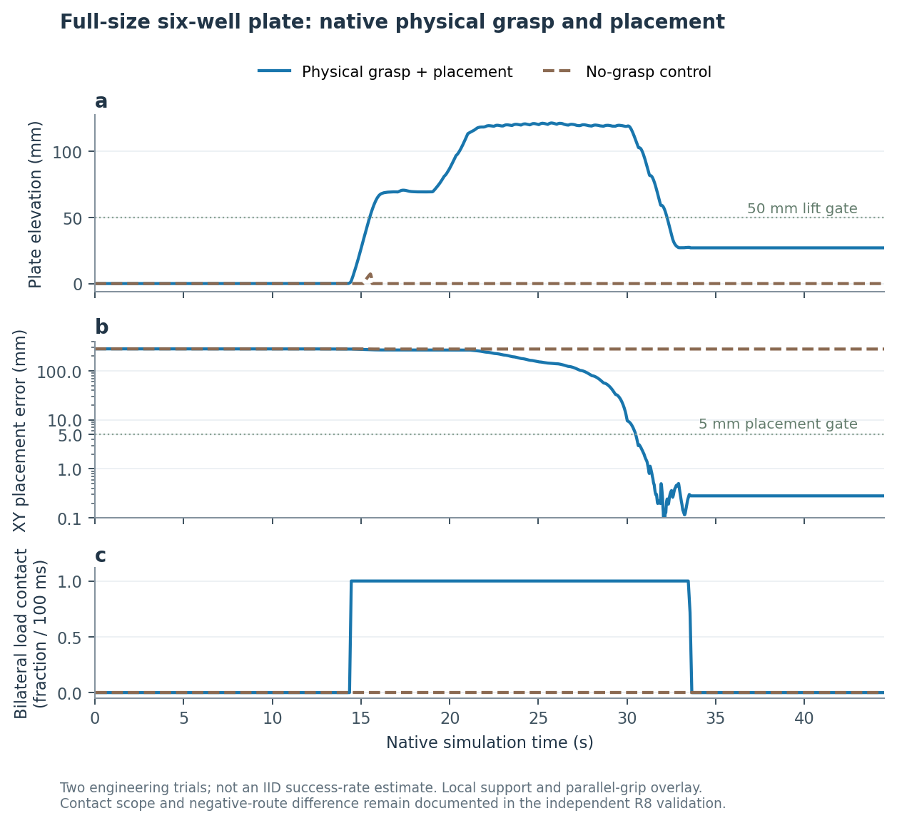
NATIVE CONTACT EVIDENCE
Pickup repair: establish the grasp before lifting
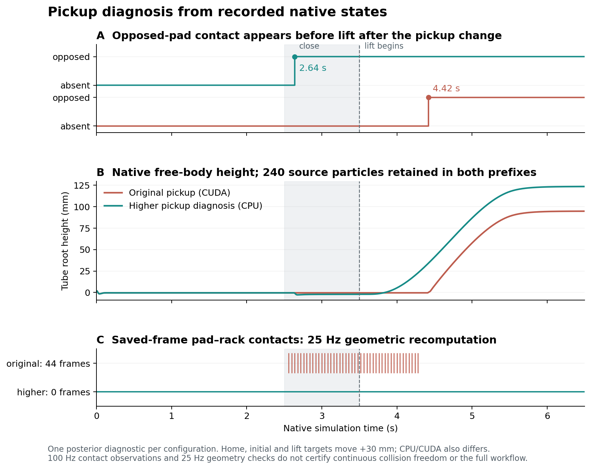
CONTINUOUS NATIVE WORKFLOW
One physical scene: plate loading to pipetting
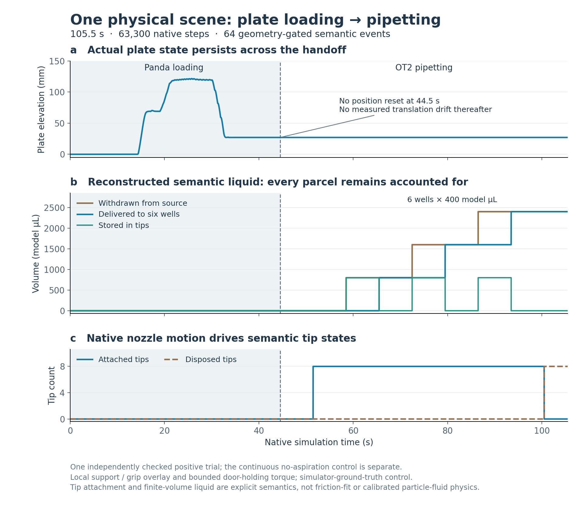
FAILURE DIAGNOSIS
Track the motion before changing the fluid
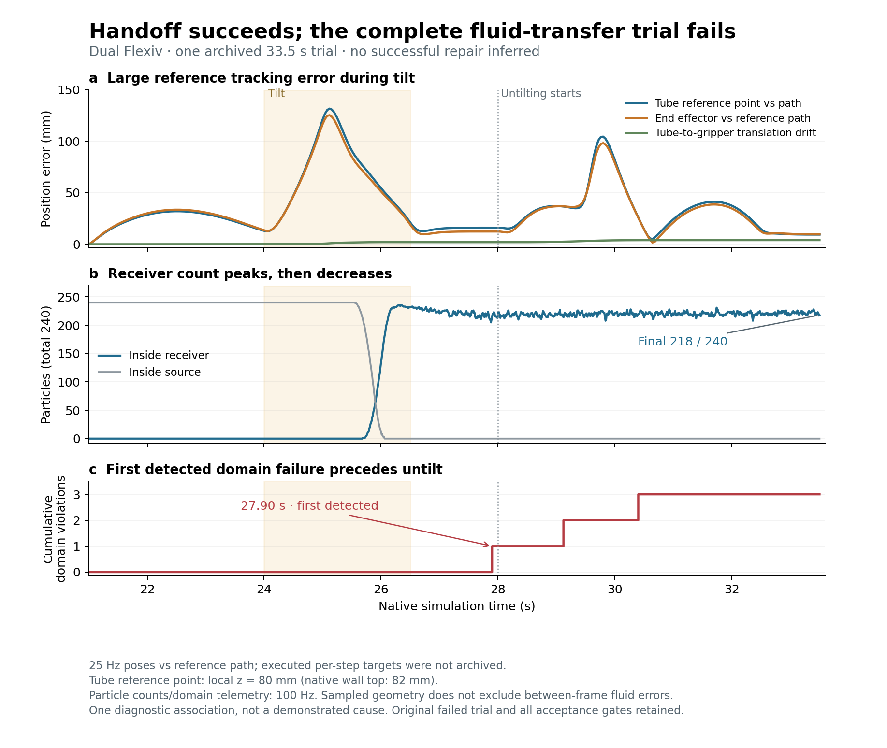
MATCHED COMPLETE-SCENE PREFIX · 14 OCT 2026
Reservoir pickup is repaired; placement still fails
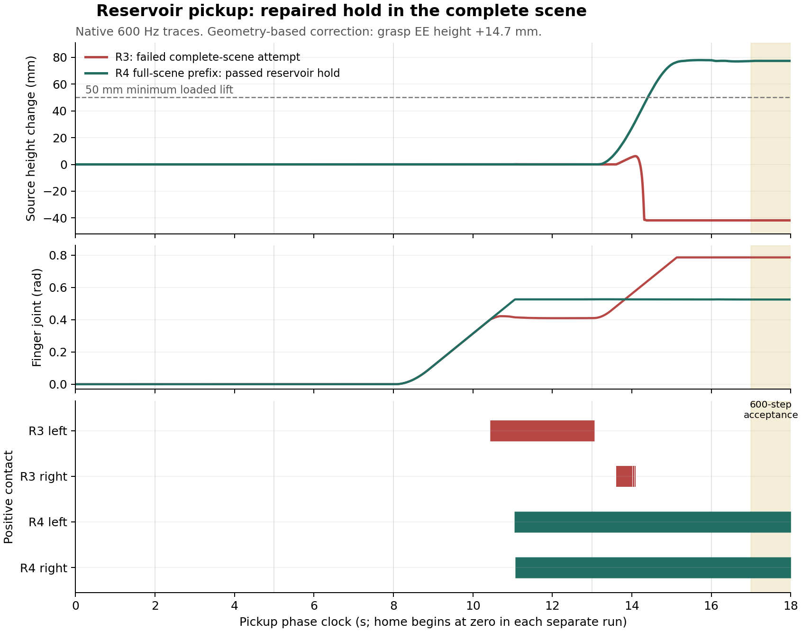
NATIVE FAILURE DIAGNOSIS · 14 OCT 2026
The release command still grips the vessel
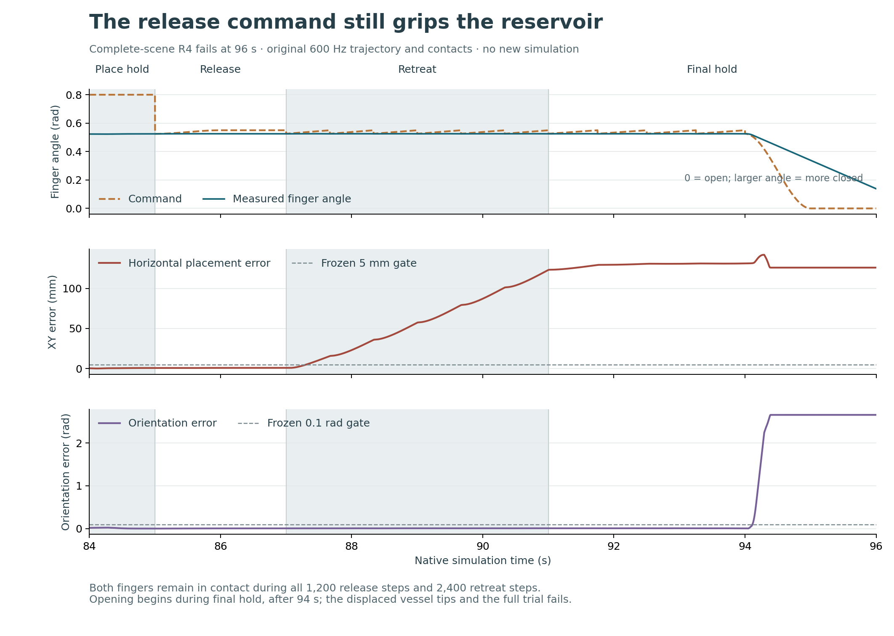
MATCHED NATIVE CONTROL · 14 OCT 2026
Finite opening clears the workstation
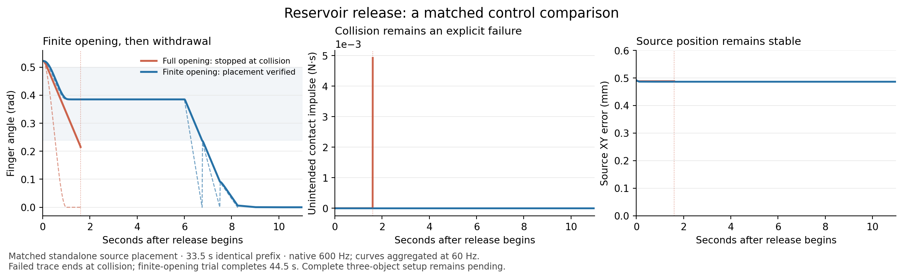
MEASURED CLOCK AUDIT · 14 OCT 2026
Count native steps, then test the reader
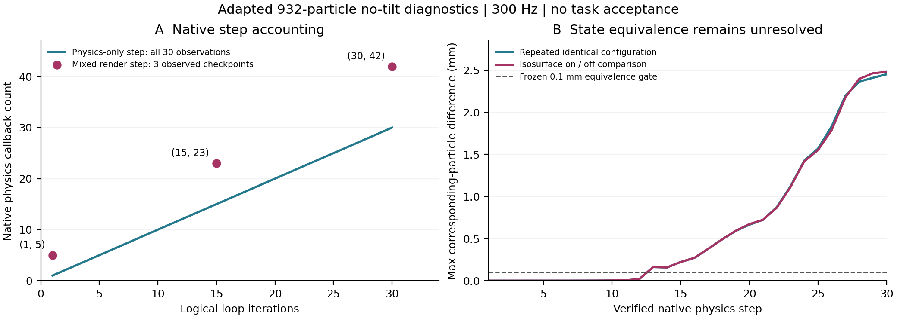
ARCHIVED FLUID DIAGNOSTIC · 14 OCT 2026
Why source agreement is not physical acceptance
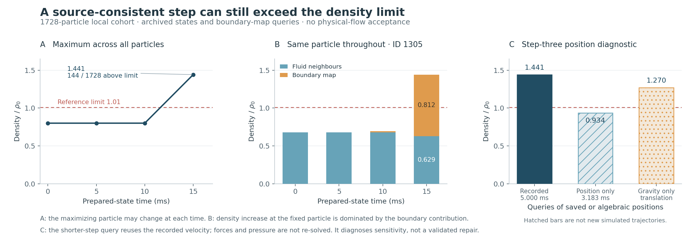
1 MS FOLLOW-UP · ACTUAL FAILURE AND FIXED-STATE DIAGNOSTICS
The pressure prediction misses the edge-density overshoot
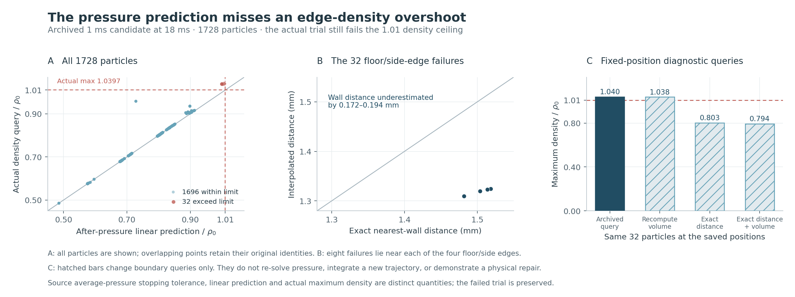
LOCAL AUTO-ENGINEERING ADAPTATION · DATA CONTRACT
A complete workflow, with the action meaning preserved
从既有23秒、14阶段的本地UR5e记录导出2,299条转换。原轨迹分母仍为2,300步；首步没有保存动作前观测，明确排除，未插值补齐。数据属于独立的240粒子实验，与后续1920粒子实验分开。
Actions are absolute end-effector pose and gripper goals passed to IK. Actual actuator commands and measured end-effector orientation were not recorded. Observations use a wxyz object quaternion; action quaternions are xyzw. This is one posthoc selected scripted demonstration. Training admission, learned full-workflow performance and the original GRID pipeline remain unproven.
Numeric arrays · NPZ · Per-transition provenance · compressed JSONL
Original-source target reconstruction and five negative-control categories were checked, including wrong return orientation and a shared parent trajectory crossing data splits. The recovered official platform samples are distinguished from the missing original Auto harnesses.
SOURCE COORDINATE REPAIR · CPU GEOMETRY ONLY
Restore the cup axis before interpreting its height
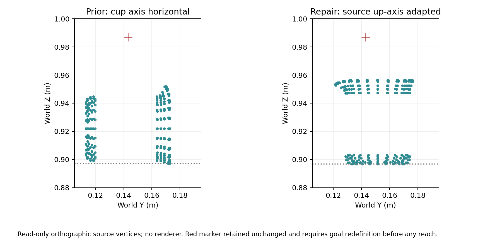
ACTUAL INTEGRATION · BOTH BRANCHES FAIL
Exact boundary distance alone does not establish a repair
The new source-map branch exactly reproduces every archived field and the original 18 ms density stop: maximum 1.039683, with 32 particles above 1.01. The single diagnostic intervention replaces distance, normal and projection together while retaining the original volume map. At its 20 ms endpoint, maximum density is 1.108958, with 24 particles above the same limit.
The intervention first fails acceptance at 8 ms. Its viscosity force-balance residual is 4.0213 × 10⁻¹⁶ N against a frozen allowance of 4.6406 × 10⁻¹⁸ N. The recorded linear-solve residual explains this scale but does not waive the gate. Because that gate is checked by the posthoc auditor, the run continued to 20 ms; later states are unqualified diagnostic data. Neither branch establishes physical-flow acceptance, and no retry or tolerance change was made.
New: inspect the boundary-switch diagnosis, figure and all-particle data →
FULL ACCEPTANCE MATRIX
Every requirement, still accountable
Published statistics are comparison targets. Local tolerances must be frozen before confirmation. Failed and incomplete attempts remain in their original denominators.
SOURCE & ASSET BOUNDARIES
What remains unavailable
PRIMARY REFERENCES
Read the originals
Hardware transfer is a separate acceptance dimension. This page reports simulation work; no physical robot success is implied.